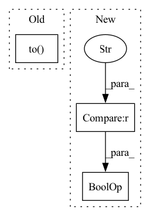

Pattern ID :22674
Before Change
elif self.rnn_type == "lstm":
h_0 = torch.zeros(self.n_layers_encoder, batch_size, self.hidden_size)
c_0 = torch.zeros(self.n_layers_encoder, batch_size, self.hidden_size)
hidden_states = (h_0.to(device), c_0.to( device) )
return hidden_states
else:
raise NotImplementedError("No such initial hidden method for rnn type {}".format(self.rnn_type))After Change
c_0 = torch.zeros(self.num_enc_layers * self.num_directions, batch_size, self.hidden_size).to(device)
hidden_states = (h_0, c_0)
return hidden_states
elif self.rnn_type == "gru" or self.rnn_type == "rnn" :
return torch.zeros(self.num_enc_layers * self.num_directions, batch_size, self.hidden_size).to(device)
else:
raise NotImplementedError("No such rnn type {} for initializing encoder states.".format(self.rnn_type))In pattern: SUPERPATTERN
Frequency: 5
Non-data size: 3
Instances Fragment ID: 71583200
Project Name: rucaibox/textbox
Commit Name: f4ce32eb9ada8d86654330f77116d5040863225a
Time: 2020-11-14
Author: lijunyi@ruc.edu.cn
File Name: textbox/module/Encoder/rnn_encoder.py
M Class Name: BasicRNNEncoder
N Class Name: BasicRNNEncoder
M Method Name: init_hidden(2)
N Method Name: init_hidden(2)
M Parent Class: torch.nn.Module
N Parent Class: torch.nn.Module
M File Name: textbox/module/Encoder/rnn_encoder.py
N File Name: textbox/module/Encoder/rnn_encoder.py
M Start Line: 33
M End Line: 45
N Start Line: 43
N End Line: 55
Before Change
gt_permutation, self.max_panel_len
)
gt_updated["free_edges_mask"] = self._feature_permute(
ground_truth["free_edges_mask"].to( self.device) , gt_permutation, ground_truth["num_panels"])
if "stitch_supervised" in self.l_components:
gt_updated["stitch_tags"] = self._feature_permute(After Change
// Match the order
if self.config["order_by"] == "placement":
if "translations" not in preds or "rotations" not in preds :
raise ValueError("ComposedPatternLoss::Error::Ordering by placement requested but placement is not predicted")
pred_placement = torch.cat([preds["translations"], preds["rotations"]], dim=-1) Fragment ID: 71583188
Project Name: maria-korosteleva/garment-pattern-estimation
Commit Name: 21b27844e4f885b3020971a4d56b516d450eb135
Time: 2021-04-30
Author: mariako@kaist.ac.kr
File Name: nn/metrics.py
M Class Name: ComposedPatternLoss
N Class Name: ComposedPatternLoss
M Method Name: _gt_order_match(4)
N Method Name: _gt_order_match(4)
M Parent Class:
N Parent Class:
M File Name: nn/metrics.py
N File Name: nn/metrics.py
M Start Line: 773
M End Line: 809
N Start Line: 775
N End Line: 821
Before Change
if not jit:
try:
model = build_model_from_openai_state_dict(state_dict or model.state_dict()).to( device)
except KeyError:
sd = {k[7:]: v for k, v in state_dict["state_dict"].items()}
model = build_model_from_openai_state_dict(sd).to(device)
After Change
// model from OpenAI state dict is in manually cast fp16 mode, must be converted for AMP/fp32/bf16 use
model = model.to(device)
if precision.startswith("amp") or precision == "fp32" :
model.float()
elif precision == "bf16":
convert_weights_to_lp(model, dtype=torch.bfloat16) Fragment ID: 71583201
Project Name: mlfoundations/open_clip
Commit Name: c4190d226b689d38d12d4ebc013a41a521df0857
Time: 2022-10-31
Author: rwightman@gmail.com
File Name: src/open_clip/openai.py
M Class Name: AnonimousClass
N Class Name: AnonimousClass
M Method Name: load_openai_model(5)
N Method Name: load_openai_model(4)
M Parent Class:
N Parent Class:
M File Name: src/open_clip/openai.py
N File Name: src/open_clip/openai.py
M Start Line: 26
M End Line: 101
N Start Line: 25
N End Line: 116
Before Change
// dim = 0 [30, xxx] -> [10, ...], [10, ...], [10, ...] on 3 GPUs
net = DataParallelPassthrough(net, device_ids=[0,1])
net=net.to(device=device)
optimizer = optim.Adam(net.parameters(), lr=lr)
// WandB magicAfter Change
optimizer = optim.Adam(net.parameters(), lr=lr)
// WandB magic
if starting_epoch == 0 and (device=="cuda" or device=="cuda:0" or device=="0") :
try:
wandb.watch(net, log_freq = 100)
except: Fragment ID: 71583196
Project Name: aangelopoulos/im2im-uq
Commit Name: 724a17fdd06a8e74c062ff2ed05166135a35a96b
Time: 2021-06-24
Author: angelopoulos@n0024.abc0
File Name: core/scripts/train.py
M Class Name: AnonimousClass
N Class Name: AnonimousClass
M Method Name: train_net(13)
N Method Name: train_net(12)
M Parent Class:
N Parent Class:
M File Name: core/scripts/train.py
N File Name: core/scripts/train.py
M Start Line: 136
M End Line: 176
N Start Line: 147
N End Line: 194
Before Change
elif self.rnn_type == "lstm":
h_0 = torch.zeros(self.n_layers_encoder, batch_size, self.hidden_size)
c_0 = torch.zeros(self.n_layers_encoder, batch_size, self.hidden_size)
hidden_states = (h_0.to(device), c_0.to( device) )
return hidden_states
else:
raise NotImplementedError("No such initial hidden method for rnn type {}".format(self.rnn_type))After Change
c_0 = torch.zeros(self.num_dec_layers, batch_size, self.hidden_size).to(device)
hidden_states = (h_0, c_0)
return hidden_states
elif self.rnn_type == "gru" or self.rnn_type == "rnn" :
return torch.zeros(self.num_dec_layers, batch_size, self.hidden_size).to(device)
else:
raise NotImplementedError("No such rnn type {} for initializing decoder states.".format(self.rnn_type)) Fragment ID: 71583193
Project Name: rucaibox/textbox
Commit Name: f4ce32eb9ada8d86654330f77116d5040863225a
Time: 2020-11-14
Author: lijunyi@ruc.edu.cn
File Name: textbox/module/Decoder/rnn_decoder.py
M Class Name: BasicRNNDecoder
N Class Name: BasicRNNDecoder
M Method Name: init_hidden(2)
N Method Name: init_hidden(2)
M Parent Class: torch.nn.Module
N Parent Class: torch.nn.Module
M File Name: textbox/module/Decoder/rnn_decoder.py
N File Name: textbox/module/Decoder/rnn_decoder.py
M Start Line: 28
M End Line: 40
N Start Line: 34
N End Line: 46